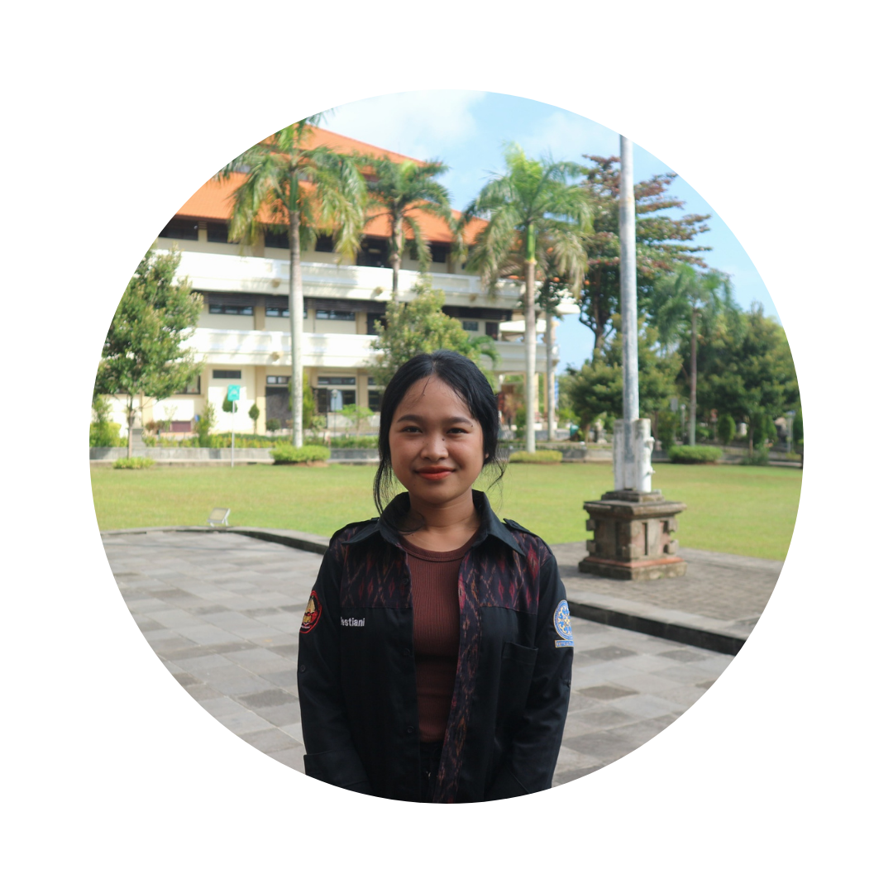

Organisasi
Saya mengikuti satu organisasi yakni HIMPUS atau Himpunan Mahasiswa Perpustakaan Kabinet Selaras Cita. Saya Menjabat sebagai Koordinator Bidang Komunikasi dan Humas yang bertanggung jawab memegang seluruh akun media sosial HIMPUS serta mengabadikan setiap kegiatan di HIMPUS.


Kembali ke beranda
ABOUT ME
Halo! Perkenalkan nama saya Ni Wayan Restiani, dalam blog ini akan berisi mengenai kehidupan perkuliahan saya di Universitas Udayan di jurusan D3 Perpustakaan. Yuk Simak terus keseruan yang saya alami dengan membaca blog saya.
Saya selalu terbuka untuk berkenalan dan berdiskusi tentang berbagai topik. Jika Anda ingin menghubungi saya, silakan kirim email ke niwayanrestiani5@gmail.com atau temukan saya di sosial media Instagram.
© 2024 By Ni Wayan Restiani
contact:
Email: niwayanrestiani5@gmail.com
Social Media: Instagram